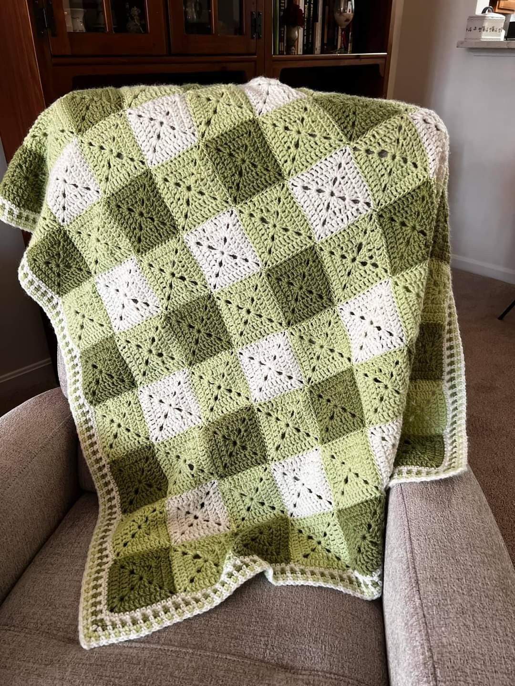
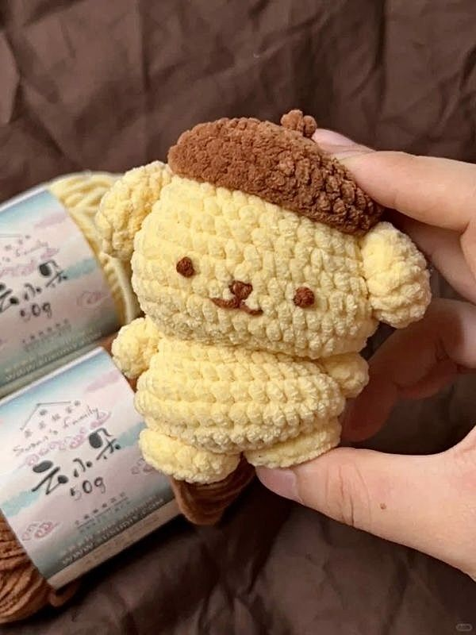
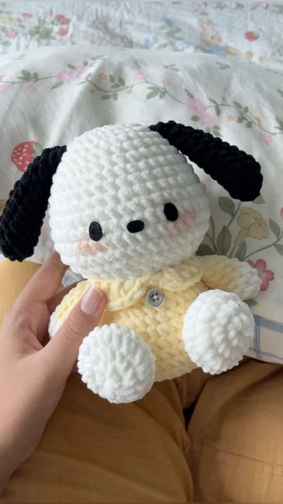
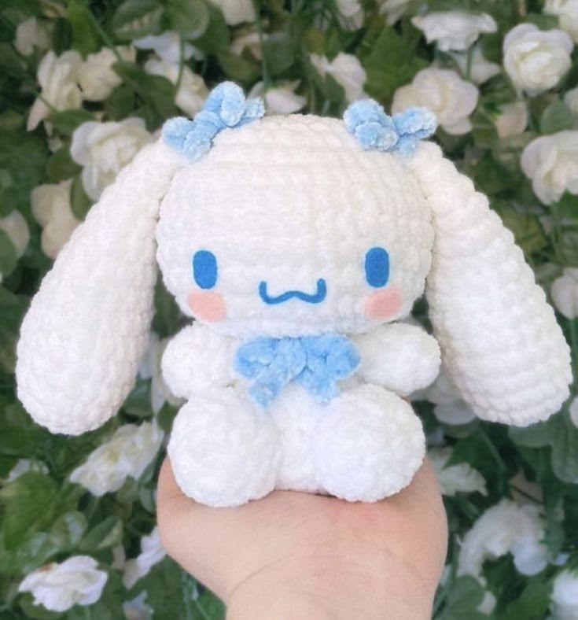
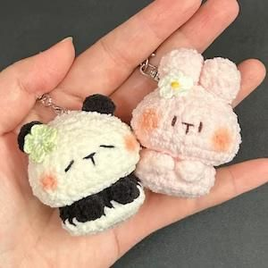

Handmade Crochet Blanket
Soft, textured and comforting, this handcrafted blanket brings a cozy charm to every room.
BestsellerHandmade favourites
Discover our unique collection of handmade crochet pieces, crafted with love and attention to detail. Each piece is designed to bring warmth, comfort, and a touch of artistry to your home.

Soft, textured and comforting, this handcrafted blanket brings a cozy charm to every room.
Bestseller
A lovable character plush, carefully stitched with playful details and a gentle finish.
Limited edition
Bright, cheerful and full of personality, this amigurumi adds a happy pop of colour to your shelf.
New arrival
A delicate, sweet companion with a soft finish and adorable details inspired by classic character design.
Collector's pick
Small but charming, these mini crochet friends make perfect keepsakes, gifts, and everyday accessories.
Gift ready